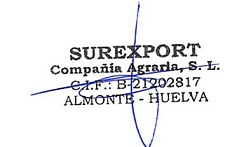

Conforme lo establecido en el art. 16 del Estatuto de los Trabajadores, y en su condición de trabajador fijo-discontinuo de la empresa Surexport Compañía Agraria, S.L. (en adelante, la “empresa”), con C.I.F. nº B21202817, por medio del presente le volvemos a comunicar su llamamiento ya que se reanudan los trabajos que son objeto de su contrato laboral, por lo que debe reincorporarse a su puesto de trabajo.
Con anterioridad a esta comunicación la Empresa le trasladó un primer aviso de llamamiento en el que le requeríamos para que, en un plazo de quince días desde dicha comunicación, contactara con el/la responsable para coordinar su reincorporación y los trabajos, sin que hasta la fecha nos conste que Ud. haya complido con dicho trámite.
Por tanto, por medio del presente se realiza un segundo aviso de llamamiento para que el día indicado en el SMS se incorpore a su centro de trabajo.
Al objeto de poder coordinar las incorporaciones y los trabajos, le volvemos a rogar que se ponga en contacto de forma inmediata en el número de teléfono que se le indica en el SMS que se le ha enviado.
Por medio del presente, también se le indica que, si en llegado el día de su reincorporación Ud. no ha contactado con la persona anteriormente indicada y/o no comparece a su puesto de trabajo, la empresa entenderá que desiste de incorporarse al mismo y su contrato de trabajo y, por ello, procederá a formalizar su baja voluntaria en la empresa y comunicará esta a las autoridades competentes, a los efectos oportunos.
Sin otro particular, reciba un cordial saludo.
